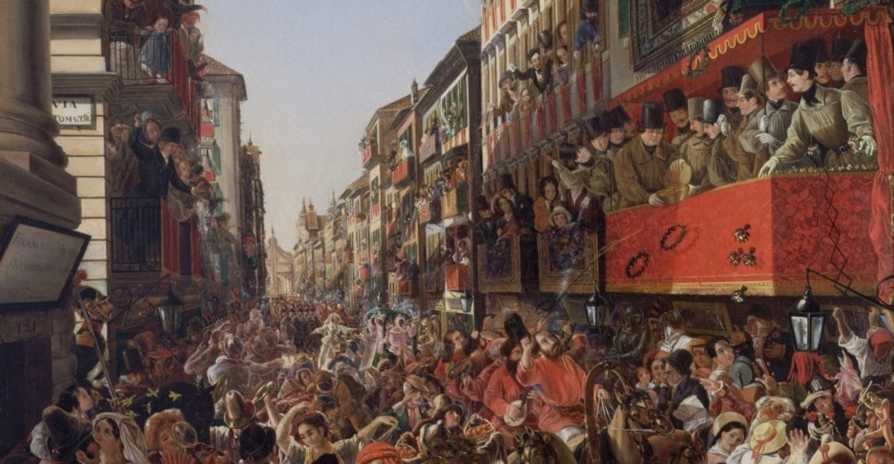
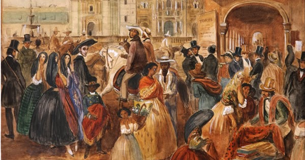

ABOUT
The origins of Mardi Gras can be traced to medieval Europe, passing through Rome and Venice in the 17th and 18th centuries to the French House of the Bourbons. From here, the traditional revelry of "Boeuf Gras," or fatted calf, followed France to her colonies.


New Orleans was established in 1718 by Bienville. By the 1730s, Mardi Gras was celebrated openly in New Orleans, but not with the parades we know today. In the early 1740s, Louisiana's governor, the Marquis de Vaudreuil, established elegant society balls, which became the model for the New Orleans Mardi Gras balls of today.
The earliest reference to Mardi Gras "Carnival" appears in a 1781 report to the Spanish colonial governing body. That year, the Perseverance Benevolent & Mutual Aid Association was the first of hundreds of clubs and carnival organizations formed in New Orleans.


1872 was the year that a group of businessmen invented a King of Carnival, Rex, to preside over the first daytime parade. To honor the visiting Russian Grand Duke Alexis Romanoff, the businessmen introduced Romanoff's family colors of purple, green and gold as Carnival's official colors. Purple stands for justice; gold for power; and green for faith. This was also the Mardi Gras season that Carnival's improbable anthem, "If Ever I Cease to Love," was cemented, due in part to the Duke's fondness for the tune.
Mardi Gras is about music, parades, picnics, floats and excitement. It's one big holiday in New Orleans!


As Mayor of the great City of New Orleans, I invite you to visit our city to experience the excitement of Mardi Gras!
New Orleans, with its unmatched culture and world-famous music and cuisine, is an exciting place to be at any time of the year. We invite everyone to experience Mardi Gras at least once in their lifetime. Make your plans now to be a part of this great tradition and see firsthand why we say, "Laissez les bon temps rouler!"
Sincerely,
LaToya Cantrell
Mayor of New Orleans